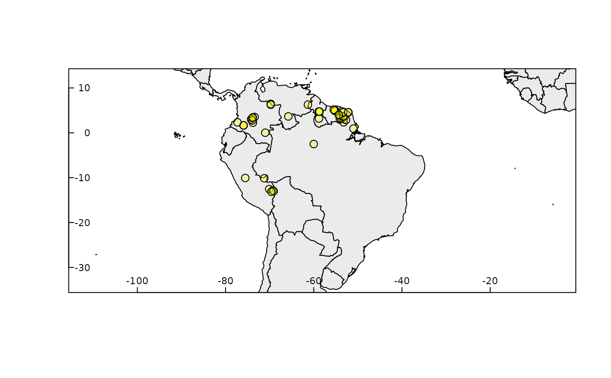

R/rangemap_bound.R
rangemap_boundaries.Rdrangemap_boundaries generates a distributional range for a given species by considering all the polygons of administrative entities in which the species has been detected. Optionally, representations of the species extent of occurrence (using convex hulls) and the area of occupancy according to the IUCN criteria can also be generated. Shapefiles can be saved in the working directory if it is needed.
rangemap_boundaries(occurrences, adm_areas, country_code, boundary_level = 0, polygons, extent_of_occurrence = TRUE, area_of_occupancy = TRUE, keep_data = FALSE, dissolve = FALSE, final_projection, save_shp = FALSE, name, overwrite = FALSE, verbose = TRUE)
| occurrences | (optional) a data.frame containing geographic coordinates
of species occurrences, columns must be: Species, Longitude, and Latitude.
Geographic coordinates must be in decimal degrees (WGS84). If not defined,
|
|---|---|
| adm_areas | (optional, character) a vector of names of administrative
areas known to be occupied by the species, names depend on the
|
| country_code | (optional, character) vector of country codes that will be
considered when creating the species range. Including neighbor countries may
be necessary to obtain better results. Use |
| boundary_level | (numeric) level of the administrative boundaries (from
0 to 2; 0 is the country level and higher values indicate finer divisions).
Default = 0. Ignored if |
| polygons | (optional) a SpatialPolygonsDataFrame object that will be used
instead of boundaries specified in |
| extent_of_occurrence | (logical) whether to obtain the extent of occurrence
of the species based on a simple convex hull polygon; default = |
| area_of_occupancy | (logical) whether to obtain the area of occupancy
of the species based on a simple grid of 4 km^2 resolution;
default = |
| keep_data | (logical) if |
| dissolve | (logical) if |
| final_projection | (character) string of projection arguments for resulting
Spatial objects. Arguments must be as in the PROJ.4 documentation. See
|
| save_shp | (logical) if |
| name | (character) valid if |
| overwrite | (logical) whether or not to overwrite previous results with
the same name. Default = |
| verbose | (logical) whether or not to print messages about the process. Default = TRUE. |
A sp_range object (S4) containing: (1) a data.frame with information about the species range, and SpatialPolygons objects of (2) unique occurrences, (3) species range, (4) extent of occurrence, and (5) area of occupancy.
If only adm_areas are defined, the result will be a sp_range object
(S4) with two elements: (1) a data.frame with information about the species
range, and (2) a SpatialPolygons object of the species range.
If extent_of_occurrence and/or area_of_occupancy = FALSE,
the corresponding spatial objects in the resulting sp_range object will be
empty, an areas will have a value of 0.
If downloading data based on country_code fails, the result is
NULL.
Data for countries defined in country_code are downloaded and loaded
using the function getData. Information about country
codes and names of administrative areas, at distinct levels, can be consulted
using: country_codes and adm_area_names.
# \donttest{ # getting the data data("occ_d", package = "rangemap") # checking which countries may be involved in the analysis rangemap_explore(occurrences = occ_d)#> Warning: NULL source CRS comment, falling back to PROJ string#> Warning: CRS object has no comment# preparing arguments level <- 0 adm <- "Ecuador" # Athough no record is on this country, we know it is in Ecuador countries <- c("PER", "BRA", "COL", "VEN", "ECU", "GUF", "GUY", "SUR", "BOL") # running using occurrence data b_range <- rangemap_boundaries(occurrences = occ_d, adm_areas = adm, country_code = countries, boundary_level = level) summary(b_range)#> #> Summary of sp_range_iucn object #> --------------------------------------------------------------------------- #> #> Species range derived from: Boundaries #> #> Species Unique_records Range_area Extent_of_occurrence #> Dasypus kappleri 56 12538020 4095146 #> Area_of_occupancy #> 184 #> #> #> #> Other contents: #>#> Length Class Mode #> species_range 8 SpatialPolygonsDataFrame S4 #> species_unique_records 56 SpatialPointsDataFrame S4 #> extent_of_occurrence 1 SpatialPolygonsDataFrame S4 #> area_of_occupancy 46 SpatialPolygonsDataFrame S4# running using only names of areas adm1 <- c("Brazil", "Ecuador", "Peru", "Bolivia", "Colombia", "Venezuela") b_range1 <- rangemap_boundaries(adm_areas = adm1, country_code = countries, boundary_level = level) summary(b_range1)#> #> Summary of sp_range object #> --------------------------------------------------------------------------- #> #> Species range derived from: Boundaries #> #> Species Range_area #> Species 13181942 #> #> #> #> Species range #>#> Object of class SpatialPolygonsDataFrame #> Coordinates: #> min max #> x -92.00854 -28.84694 #> y -33.74708 15.91247 #> Is projected: FALSE #> proj4string : [+proj=longlat +datum=WGS84 +no_defs] #> Data attributes: #> X.Species. rangekm2 #> Length:6 Min. : 256116 #> Class :character 1st Qu.: 955218 #> Mode :character Median :1110076 #> Mean :2196990 #> 3rd Qu.:1253802 #> Max. :8500365# }